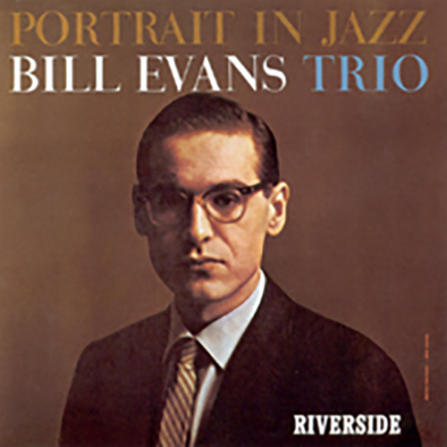
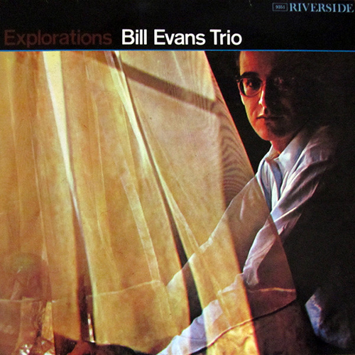
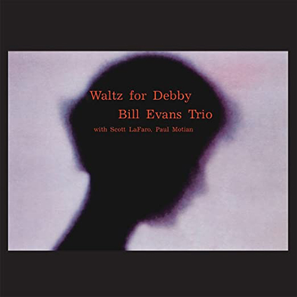

Portrait in Jazz
Released 1960
Recorded December 28, 1959
Reeves Sound Studios, New York City
- Come Rain or Come Shine
- Autumn Leaves
- Witchcraft
- When I Fall in Love
- Peri's Scope
- What Is This Thing Called Love?
- Spring Is Here
- Someday My Prince Will Come
- Blue in Green

Explorations
Released End of March 1961
February 2, 1961
Bell Sound Systems, New York City
- Israel
- Haunted Heart
- Beautiful Love (Take2)
- Beautiful Love (Take1)
- Elsa
- Nardis
- How Deep Is the Ocean?
- I Wish I Knew
- Sweet and Lovely
- The Boy Next Door

Waltz for Debby
Released End of February/Early March 1962
Recorded June 25, 1961
Venue Village Vanguard, New York City
- My Foolish Heart
- Waltz for Debby
- Detour Ahead
- My Romance
- Some Other Time
- Milestones